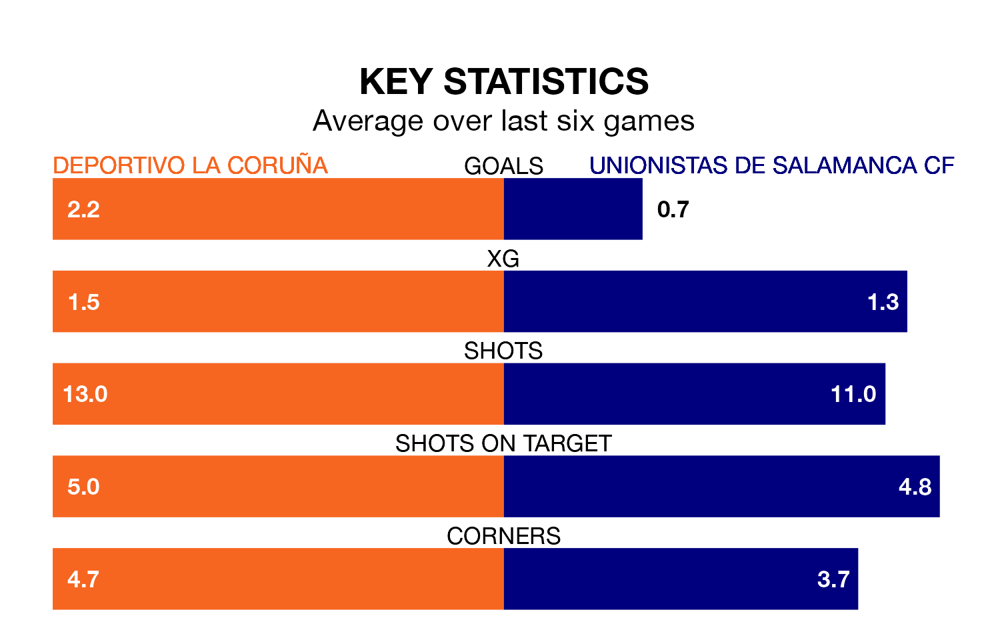

Deportivo La Coruña face Unionistas de Salamanca CF on Sunday seeking to protect their formidable unbeaten run in Primera Division RFEF Group 1.
Deportivo La Coruña are unbeaten in 11, with nine wins and two draws, ahead of the 4pm kick-off.
They face an Unionistas de Salamanca team who have won four and drawn five over the same number of games.
With 50 goals in 30 games so far this season, Deportivo La Coruña are the league's joint-highest scorers with 1.7 goals per game. And they are conceding fewer than average, letting in 22 goals at a rate of 0.7 per game.
Unionistas de Salamanca, meanwhile, are below average scorers, with 0.8 goals per game, compared to a league average of 1.0. They have also conceded 0.8 goals per game.
The hosts are top of the table after 30 games, of which they have won 16 and drawn 10, earning 58 points.
The away team are seven places behind Deportivo La Coruña in eighth, with 10 wins and 12 draws putting them on 42 points.
In the last 10 years, Deportivo La Coruña and Unionistas de Salamanca have played each other on eight occasions. They won two each, and they drew four times.
On average, Deportivo La Coruña scored 1.0 goal and Unionistas de Salamanca 0.8 in those matches.
Their last meeting was on September 16, when they played out a 1-1 draw.
Deportivo La Coruña's Lucas Perez is the league's most creative player, racking up 11 assists in 22 appearances so far this season.
For Unionistas de Salamanca, Jon Rojo Sagarna, Carlos Giménez Bachiller, Alfred Planas, Mario Losada Laguna, Borislav Ivaylov Stankov, Héctor Fernández Fernández-Nespral, Álvaro Gómez Martín, Ekaitz Jiménez Astigarraga, Asier Teijeira Martin, Ramiro Mayor Ruiz, Juan Antonio Serrano Llabrés and Jon Etxaniz Llamas have set up the most goals, having laid on one assist apiece to date.
Deportivo La Coruña's last match was on March 30, a 1-0 win against UE Cornellà, with Hugo José Rama Calviño getting the goal for Deportivo La Coruña.
Unionistas de Salamanca beat SD Logroñés 1-0 last time out, also on March 30, with Ivaylov Stankov on the scoresheet.
Updated: 10:31 (UTC), 31/03/24